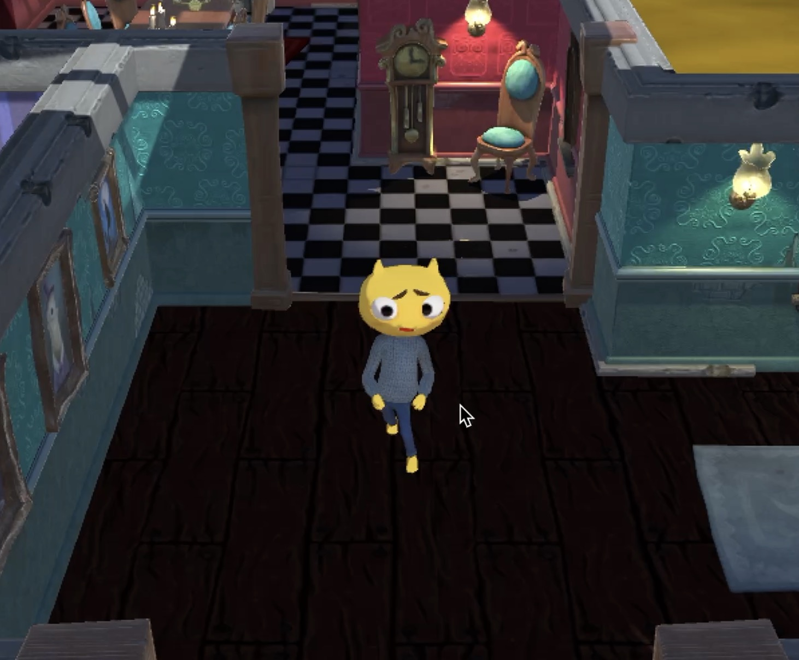

Sam is an agile character who wears dark, nondescript clothing suitable for sneaking. His clothing reflects his need to hide in the shadows, emphasising his role as a thief. Sam's background as a professional thief gives him the skills he needs to travel through haunted houses. His experience has taught him to anticipate the unexpected, but the presence of ghosts and cattle in the same environment challenges even his seasoned instincts.
Ghosts are translucent with fuzzy edges, as if they will dissipate into the air at any moment. Patrolling the house in unpredictable ways, ghosts symbolise the fear of the unknown and the unanswered secrets of the past. They are not only physical obstacles, but also a test of the player's spirit!
Cows stand in the corners of the houses, seemingly harmless, but once the player collides with them, they can cause a huge mess. These cows are not controlled by the player and do not actively attack, but their presence increases the difficulty of escape, forcing the player to work around these mindless obstacles. The cows symbolise obstacles that may seem mundane but can trigger a major impact at a critical moment. Their presence adds a sense of humour to the game and reminds the player that even the most insignificant things can be a huge obstacle at the most unexpected moments.